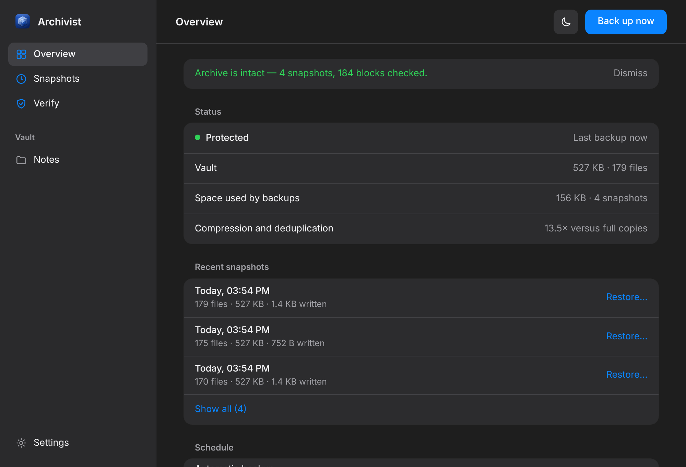

Archivist is a simple backup tool that turns your Obsidian vault into lossless snapshots, restores, and checks.
How it works
Each backup is a snapshot of the whole vault. Only the data that changed is written.
archivist backup
archivist list20261117-155423 166 files 526.8 KB (+109.1 KB)
20261117-155425 170 files 526.8 KB (+1.4 KB)
20261117-155426 175 files 526.9 KB (+752.0 B)
20261117-155427 179 files 526.9 KB (+1.4 KB)Notes are split into chunks, deduplicated and compressed. Images, PDFs, audio and video are already compressed, so they are stored as they are. Nothing is ever recompressed with loss.
archivist statsSnapshots: 4
Latest vault (logical): 526.9 KB
Archive on disk: 155.6 KB
Unique blocks: 184 in 4 packs
Vault/archive ratio: 3.39x (with the whole history)Figures from a demo vault of 179 notes.
Archivist in your terminal
Back up, restore and verify from the command line. See the CLI guide for every command.
archivist --repo /Volumes/Disk/Backups backup --vault ~/Documents/NotesArchivist in your app
Open the native window, choose your vault and a backup folder, press Back up now.
cargo build --release --features window
./target/release/archivist./make-dmg.sh
open dist/Archivist.dmg# if Gatekeeper blocks the app
xattr -d com.apple.quarantine ./archivistExplore
Archivist in use
A native window with a sidebar, light and dark themes, and settings that apply as you change them. About and Settings sit in the system menu.

Snapshots
A snapshot appears only after it is completely written, so an interrupted backup never leaves a broken one. Earlier snapshots are never modified. If nothing changed, no new snapshot is created.
| In the vault | What happens |
|---|---|
| Notes, JSON, CSS | Deduplicated and compressed with zstd |
| PNG, JPEG, PDF, audio, video | Stored as they are |
| A few edited lines | Only the changed chunks are written |
| A moved file | No extra space |
Restore
Restore any snapshot into an empty or new folder. Contents, modification times and empty folders come back identical. Your original vault is never touched.
archivist restore latest ~/Desktop/RestoreRestored 179 files (526.9 KB) to ~/Desktop/RestoreAny snapshot can also be exported as a single portable .tar.zst that opens with Keka, 7-Zip or tar.
Verify
A quick check confirms every needed block is present. A full check re-reads every block and recomputes its BLAKE3 hash.
archivist verify --full4 snapshots, 184 blocks checked (full hash)
Archive intact ✓Retention
Keep the latest N snapshots plus one per day, week and month. After each backup Archivist applies the policy and reclaims the space. The newest snapshot is never deleted.
CLI
| Command | What it does |
|---|---|
backup | Create a snapshot |
list stats | List snapshots, show sizes |
verify [--full] | Check integrity |
restore <id|latest> <dir> | Restore into an empty folder |
export <id|latest> <file> | Write a .tar.zst |
prune | Apply the retention policy |
ui | Interface in the browser |
The local interface listens on 127.0.0.1 only and needs a random token on every call. Restore refuses paths containing ...
Limits
Is the archive encrypted?
Not yet. Keep it on an encrypted volume such as FileVault, BitLocker or VeraCrypt if it holds sensitive data.
Will it shrink my images?
No, on purpose. Already-compressed media is stored unchanged. You save space on text, repeated content and history.
What is not preserved?
Symlinks are skipped. Unix permissions and extended attributes are not stored; modification times are.
Can two computers write to one archive?
Not at the same time. The lock is local, not network-wide.
Does it replace Time Machine?
No. It protects one thing, an Obsidian vault, with history and integrity checks. Keep your other backups.